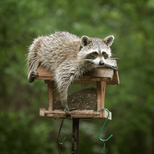
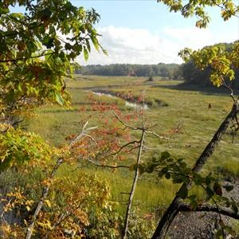
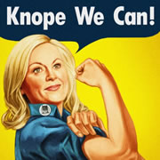

How I Stand on Issues
Raccoon InfestationEveryone hates raccoons! They're sneaky, steal food, and they're everywhere! The rapidly growing raccoon population is only getting worse, and politicans refuse to address the issue. Once I'm president, I'm going to be starting several national iniatives to make sure that raccoons are eradicated from our nation. No more will we bow down to these smelly overlords. Today, we can take charge. Today, we can make a new tomorrow. |
 |
|  |
ParksEveryone already knows how I feel about parks. I mean NBC even produced a show about how I started off in the parks department! Parks and recreation will always hold a special place in my heart. If elected, I will keep an environmentally driven focus on our national and local parks to make sure that the pristine beauty of America is preserved for everyone! I can't wait to do that! I can't wait to be president! Please vote! For me! |
FeminismFeminism is so important in our current society. That's why I've started iniatives like the Pawnee Goddesses to make sure that rich beautiful female voices are always heard here in Pawnee and in America. I will not back down to the male opinion, and once elected, America, I promise to you that feminism and women's right will no longer take a backseat in our country, but will be a prominent fist in the air, declaring equality for all! |
 |
| |
|||
| ©2015, Donghun Kang, CMU | donghunk | Contact me | |